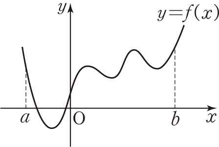
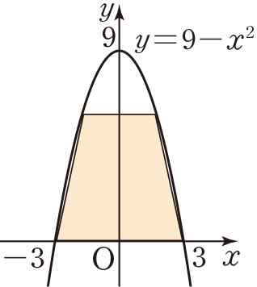
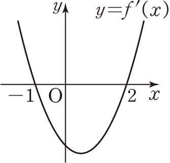

Ⅱ. 미분 대단원 핵심 개념 총정리
35차시 단원 전체 구조화 마인드맵
미분계수와 도함수의 정의부터 접선의 방정식, 평균값 정리, 함수의 증가·감소와 극대·극소, 삼차·사차함수의 그래프, 방정식과 부등식의 활용, 속도와 가속도까지 Ⅱ. 미분 대단원의 모든 핵심 원리를 한눈에 입체적으로 정리합니다.
대단원 마무리평가 16문항 실전 풀이
36차시 실전 평가 및 오답 클리닉
기본 연산부터 고난도 킬러 문항까지 16문항을 개별 연습장과 함께 직접 풀어보고, 즉각적인 실시간 채점 및 정밀 정석 해설을 통해 취약점을 완벽하게 보완합니다.
함수 $f(x) = x^2 - x + 2$에 대하여 $x$의 값이 $1$에서 $1 + a$까지 변할 때의 평균변화율이 $5$이다. 상수 $a$의 값을 구하시오.
미분가능한 함수 $f(x)$에 대하여 $\lim_{h \to 0} \frac{f(a) - f(a - 3h)}{h}$를 $f'(a)$를 이용하여 나타낸 것은?
함수 $f(x) = (1 + x - x^2)(1 - x + x^2)$에 대하여 $f'(2)$의 값을 구하시오.
점 $(0, -2)$를 지나는 곡선 $y = ax^3 + bx + c$ 위의 점 $(1, 2)$에서의 접선의 기울기가 $6$일 때, $a - b - c$의 값은?
함수 $y = f(x)$의 그래프가 아래와 같을 때 $\frac{f(b) - f(a)}{b - a} = f'(c)$를 만족시키는 상수 $c$의 개수를 구하시오. (단, $a < c < b$)

닫힌구간 $[0, 4]$에서 함수 $f(x) = x^4 - 4x^3 - 2x^2 + 12x + a$의 최댓값과 최솟값의 합이 $11$일 때, 상수 $a$의 값은?
곡선 $y = 2x^3 + 1$ ($x > 0$) 위를 움직이는 점 P와 직선 $y = 6x - 12$ 사이의 거리가 최소가 되도록 하는 점 P의 좌표를 $(a, b)$라고 할 때, $a + b$의 값은?
삼차함수 $f(x)$가 다음을 모두 만족시킬 때, 함수 $f(x)$의 극댓값을 구하시오.
㈎ $\lim_{x \to 0} \frac{f(x)}{x} = -15$
㈏ 함수 $f(x)$가 $x = 1$에서 극솟값 $-8$을 갖는다.
곡선 $y = 9 - x^2$과 $x$축으로 둘러싸인 부분에 내접하는 사다리꼴의 넓이의 최댓값을 구하시오.

삼차함수 $y = f(x)$의 도함수 $y = f'(x)$의 그래프가 아래와 같다. $f(-1) = 2, f(2) = -4$일 때, 방정식 $2f(x) - k = 0$이 서로 다른 두 실근을 갖도록 하는 실수 $k$의 값의 합을 구하시오.

모든 실수 $x$에 대하여 부등식 $x^4 - 4k^3x + 3 \ge 0$이 성립하도록 하는 정수 $k$의 개수를 구하시오.
원점을 출발하여 수직선 위를 움직이는 점 P의 시각 $t$에서의 위치 $x$가 $x = 2t^3 - 7t^2 + 8t$일 때, 옳은 것만을 보기에서 있는 대로 고르시오.
모든 실수 $x$에 대하여 함수 $f(x) = \begin{cases} x^3 + 1 & (x < 1) \\ ax^2 - bx + 1 & (x \ge 1) \end{cases}$ 이 미분가능할 때, $a + b$의 값을 구하시오. (단, $a, b$는 상수이다.)
함수 $f(x) = x^3 - x^2 - ax + 2$가 닫힌구간 $[1, 2]$에서 감소하도록 하는 실수 $a$의 값의 범위를 구하시오.
다항함수 $f(x)$가 다음을 모두 만족시킬 때, $f(2)$의 값을 구하시오.
㈎ 모든 실수 $x$에 대하여 $\{f'(x)\}^2 = 4f(x) + 9$
㈏ $f'(1) = 1$
$x > 1$일 때, $2$ 이상의 자연수 $n$에 대하여 부등식 $x^n + n(n - 3) > nx + 1$이 성립하도록 하는 자연수 $n$의 최솟값을 구하시오.
수학 프로젝트 활동: 세상의 변화를 이해하는 수학, 미분
교과서 110~111쪽 · 인공지능 최적화와 과속 단속 카메라의 수학적 원리 탐구
미분은 왜 첨단 과학과 현대 사회의 핵심 언어인가?
수학의 눈으로 바라보면 세상의 모든 현상은 끊임없이 변화하고 있습니다. 미분은 "어느 한순간의 변화율(순간변화율)"을 정확하게 측정하고 예측하는 강력한 도구입니다. 인공지능의 딥러닝 최적화부터 고속도로 과속 단속의 법적 근거까지, 실생활 속 미분의 비밀을 탐구해 봅시다.
🤖 똑똑한 인공지능을 만들기 위한 최적화 (경사하강법)
인공지능이 사물을 인식하거나 언어를 번역할 때, 모델의 예측값과 실젯값 사이의 오차(손실, Loss)를 최소화해야 합니다. 손실 함수 $L(w)$의 함숫값이 최소가 되는 최적의 파라미터(가중치 $w$)를 찾기 위해 미분(접선의 기울기)을 사용합니다.
🚗 과속 차량을 단속하는 카메라의 원리: 순간속도 vs 평균값 정리
고속도로에서 마주치는 과속 카메라는 두 종류가 있습니다. 카메라 앞을 지날 때만 찍는 고정식(지점) 단속과 수 km 구간 전체를 측정하는 구간 단속입니다. 두 단속 방식의 이면에는 각각 미분계수(극한)와 평균값 정리라는 명쾌한 수학이 숨어 있습니다.
| 구분 | 고정식 지점 단속 (110쪽) | 구간 단속 (111쪽 심화) |
|---|---|---|
| 원리 | 도로 바닥 2개 감지선 사이 통과 시간 측정 | 수 km(예: 10km) 시작점과 종점 통과 시간 측정 |
| 수학 공식 | $v \approx \frac{\Delta L}{\Delta t} \xrightarrow{\Delta t \to 0} \lim_{\Delta t \to 0} \frac{\Delta L}{\Delta t}$ | $V_{avg} = \frac{L_{total}}{\Delta T}$ |
| 적용 이론 | 순간변화율 (미분계수) | 평균값 정리 (MVT) |
자동차의 위치 함수 $s(t)$는 연속이고 미분가능합니다. 구간 단속 거리 $10\text{km}$를 $5\text{분}$($\frac{1}{12}\text{시간}$) 만에 주파했다면, 평균속도는 $\mathbf{120\text{km/h}}$입니다.
평균값 정리에 의해: $$\frac{s(T) - s(0)}{T - 0} = s'(c) = 120\text{km/h}$$ 를 만족하는 순간 $c$가 구간 내에 반드시 적어도 한 번 이상 존재합니다!
🌐 교과서 111쪽 확장: 세상을 움직이는 다양한 미분의 응용 분야
대기와 해수의 기압, 온도, 풍속의 시간에 따른 변화율을 미분방정식으로 풀어 날씨와 태풍 경로를 예측합니다.
상품 1단위를 추가 생산할 때 드는 한계비용($MC = C'(q)$)과 한계수입을 미분으로 분석하여 기업 이윤을 극대화합니다.
혈관 벽 중심과의 거리에 따른 혈류 속도 변화율(푸아죄유 법칙) 및 약물의 혈중 농도 감쇄율을 미분으로 계산합니다.
캐릭터의 부드러운 움직임 곡선(베지에 곡선)과 빛의 반사각을 법선벡터(미분)로 실시간 렌더링합니다.
📋 수학 프로젝트 활동 보고서 & 자기평가 (111쪽)
작성 내용은 브라우저에 자동 임시 저장됩니다⭐ 나의 학습 스스로 점검하기 (자기평가)
📝 Ⅱ. 미분 대단원 완강 성찰 메모
자동 저장 대기미분계수부터 도함수, 접선, 극대·극소, 최대·최소, 방정식·부등식, 속도와 가속도, 프로젝트까지 스스로의 성장을 돌아보세요.